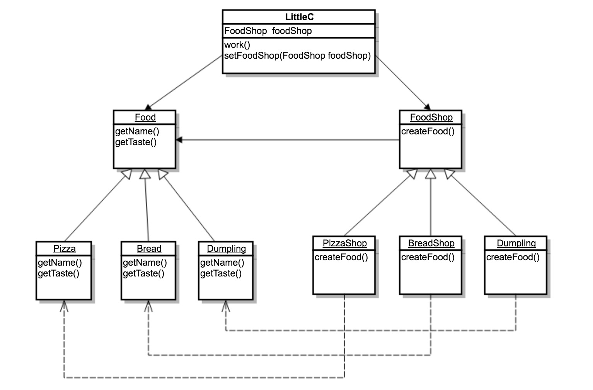

大家好，我叫张小C，我是一个厨师，专职烤面包。下面是我的工作。
public class World {
public static void main(String[] args) {
LittleC littleC = new LittleC();
littleC.work();
}
}
public class LittleC {
public void work() {
Bread bread = new Bread();
System.out.print(bread.getName()+"做好了！");
System.out.println(bread.getTaste());
}
}
public class Bread {
private String name = "面包";
public String getName() {
return name;
}
public String getTaste(){
return "软软的，没什么味道";
}
}有一天，小明（老顾客）来到张小c的店中，以下是对话－－－
小明：我吃你家面包都吃腻了，有没有别的吃的，没有的话我以后就换地方了。
小C：有有有，我马上做别的美味出来。
小C心想，我只会烤面包啊，该咋办，难不成再加个workForPizza，那要是这个也吃腻了总不能加到屎吧…况且我脑子笨，学得慢…好吧，爱吃不吃，你不吃自有人吃！（纯属意淫）
现在让我们来看一看小C现在面临的问题是什么，先看看work方法中直接new了一个Bread，把自己禁锢在了一种食物中。那有没有什么办法可以解决小c的当前困境呢？
小强:小C，我最近开了一个Pizza店，什么时候过来吃Pizza啊？
小C:太好了，我正愁呢。这样咱们合作，顾客在我这里点Pizza的时候，你们店就给我做一个Pizza送过来。互利共赢嘛。
小强：好，一言为定。
也许最近流行开餐馆，小C的朋友小梅开了家饺子馆，小C用同样的方法让小梅加盟了。 而且为了专心运营，连自己的烤面包工作都外包给小红的面包店了。
经过酝酿，新的设计出现了：

下面是代码摘要：
public class World {
public static void main(String[] args) {
LittleC littleC = new LittleC();
System.out.println("小明：我要吃面包！");
littleC.setFoodShop(new BreadShop());
littleC.work();
System.out.println("小明：我要吃饺子！");
littleC.setFoodShop(new DumplingShop());
littleC.work();
System.out.println("小明：我要吃披萨！");
littleC.setFoodShop(new PizzaShop());
littleC.work();
}
}
/**
* 小C
*
* @author bob
*/
public class LittleC {
private FoodShop foodShop;
public void setFoodShop(FoodShop foodShop){
this.foodShop = foodShop;
}
public void work() {
Food food = foodShop.createFood();
System.out.print(food.getName() + "做好了！");
System.out.println(food.getTaste());
}
}
public abstract class Food {
public abstract String getName();
public abstract String getTaste();
}
public abstract class FoodShop {
public abstract Food createFood();
}
public class Bread extends Food {
public String getName() {
return "面包";
}
public String getTaste() {
return "软软的，很清淡";
}
}
public class BreadShop extends FoodShop {
@Override
public Food createFood() {
return new Bread();
}
} 通过引入工厂方法模式我们解决了，Bread硬编码到LittleC中导致的扩展受限问题。小C以后可以接入各种各样的菜色而不需要改动既有代码（world除外）。
缺点也是很明显，我为了一个菜色还要加一个餐馆进来。这里可以通过带有参数到工厂方法来优化这种情况。创造一个什么菜都可以生产的餐馆，比如根据类型完整名称就可以得到具体的食物，那么只需要一个餐馆就可以了。
所有需要new一个对象的地方，同时要求有足够的灵活性。